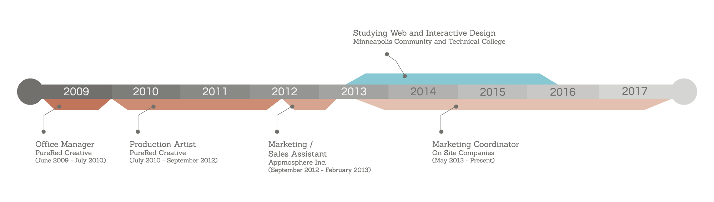
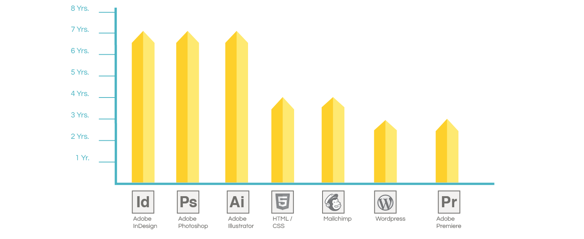

<!DOCTYPE html>
<html>
  <head>
    <meta charset="utf-8">
    <title>Erin Black's Resume Web Page</title>
    <link rel="stylesheet" href="styles.css">
    <link href="https://fonts.googleapis.com/css?family=Questrial|Sanchez" rel="stylesheet">
  </head>
  <body>
    <div id="wrapper">
      <header>
        <div id="headerLogo">
          
        </div>
        <div id="headerName">
          <div id="titleName">ERIN BLACK</div>
          <p>5340 Ewing Ave S <br/> Minneapolis, MN 55410</p>
        </div>
        <div id="headerNumber">
          <div id="headerPhone">P: 763.438.6421</div>
          <p>erinblackdesign@gmail.com</p>
        </div>
      </header>
      <div id="headerUnderline"></div>

      <!--Start Experience-->
      <div class="title">
        <h2>Work Experience</h2>
          <div class="titleUnderline"></div>
      </div>
      

        <!--On Site Companies Marketing Coordinator-->

        <div class="position">
          <h3 class="posTitle">Marketing Coordinator</h3>
          <hr width="255" align="left" color="#4bb3c2" size="3">
          <h4>On Site Companies  -  2014-Present</h2>
            <div class="responsiblities">
              <div class="posAttr">Responsibilities</div>
                <ul>
                  <li>Create and edit weekly blog posts that appeal to a range of target markets and regions.</li>
                  <li>Create optimized landing pages for all five branch locations and different product offerings.</li>
                  <li>Manage ppc marketing such as Google Adwords an Facebook ads.</li>
                  <li>Identify key demographics to target and find strategic places where they can best be reached.</li>
                  <li>Send out weekly surveys to special event customers through Mailchimp to gauge customer satisfaction.</li>
                  <li>Manage social media accounts (including Facebook, Twitter, Pinterest and LinkedIn) to increase awareness.</li>
                </ul>
            </div>
              <div class="accomplishments">
                <div class="posAttr">Accomplishments</div>
                  <ul>
                    <li>Designed, optimized and launched 200+ pg website re-design for onsiteco.com using WordPress.</li>
                    <li>Wrote all copy, page titles, page descriptions for all pages of onsiteco.com re-design.</li>
                    <li>Increased organic traffic to onsiteco.com by over 200% across five major market regions.</li>
                    <li>Increased total online quote conversions by 280%.</li>
                    <li>Filmed and produced several youtube videos highlighting On Site’s customer service and events. View at <a href="https://www.youtube.com/user/onsitecompanies">onsite's youtube channel</a></li>
                    <li>Re-Designed and launched website for sanisink.com using Wordpress to allow online sales</li>
                  </ul>
              </div>
        </div>

            <!--Appmosphere Sales and Marketing Assistant-->

            <div class="position">
              <h3 class="posTitle">Marketing and Sales Associate</h3>
              <hr width="350" align="left" color="#4bb3c2" size="3">
              <h4>Appmosphere Inc.  -  September 2012-February 2013</h2>
                <div class="responsiblities" id="app">
                  <div class="posAttr">Responsibilities</div>
                    <ul>
                      <li>Worked effectively with sales team to identify customer needs and highlighted products through promotional materials.</li>
                      <li>Managed social media accounts. Created Twitter account and gained a substantial number of followers and
increased Facebook “likes” by 20% in three months.</li>
                      <li>Developed promotional materials for sales team for successful re-branding of the company.</li>
                      <li>Designed and managed company newsletters using MailChimp.</li>
                      <li>anage client database by updating contact information as well as tracked sales, revenue and payment schedule.</li>
                    </ul>
                  </div>
                </div>

                <!--PureRed Creative Production Artist-->

                <div class="position">
                  <h3 class="posTitle">Production Artist</h3>
                  <hr width="190" align="left" color="#4bb3c2" size="3">
                  <h4>PureRed Creative  -  July 2009-September 2012</h2>
                    <div class="responsiblities" id="pureRed">
                      <div class="posAttr">Responsibilities</div>
                        <ul>
                          <li>Worked with Supervalu to meet their needs and requirements for current and future advertisements.</li>
                          <li>Created mail out advertisements that both fit with company standards, as well as the needs of the client.</li>
                          <li>Used Illustrator, InDesign and Photoshop to design creative pieces to meet clients expectations.</li>
                        </ul>
                    </div>
                </div>
            <!--End Job Positions-->

            <!--Begin Program Experience-->
            <div class="title">
              <h2>Program Knowledge</h2>
                <div class="titleUnderline"></div>
            </div>
          <div id="programs">
            
          </div>
          <div id="programsMobile">
            <div class="prgm" id="ill">
              
              <p class="yrs">Adobe Illustrator - 8 Years</p>
            </div>
            <div class="prgm" id="ind">
              
              <p class="yrs">Adobe Indesign - 8 Years</p>
            </div>
            <div class="prgm" id="pht">
              
              <p class="yrs">Adobe Photoshop - 8 Years</p>
            </div>
            <div class="prgm" id="html">
              
              <p class="yrs">HTML and CSS - 4 Years</p>
            </div>
            <div class="prgm" id="wordPress">
              
              <p class="yrs">Wordpress - 3 Years</p>
            </div>
            <div class="prgm" id="premiere">
              
              <p class="yrs">Adobe Premiere - 3 Years</p>
            </div>
          </div>
        <!--End  Program Experience-->

        <!--Start Education-->

        <div class="title">
          <h2>Education</h2>
            <div class="titleUnderline"></div>
        </div>
        <div class="position">
          <h3 class="posTitle">Minnesota Community and Technical College</h3>
          <hr width="255" align="left" color="#4bb3c2" size="3">
          <h4>Web and Interactive Design  -  2013-2016</h4>
          <h4>Professional Certificate</h4>
        </div>
        <div class="position">
          <h3 class="posTitle">Southwest Minnesota State University</h3>
          <hr width="255" align="left" color="#4bb3c2" size="3">
          <h4>Marketing with Minor in Graphic Design - Graduation: May 2009 </h4>
          <h4>Bachelors of Science</h4>
        </div>
        <!--End Education-->
      <footer>
        <div id="footerTxt"> ERIN BLACK  &nbsp; &nbsp; | &nbsp;&nbsp;  5340 Ewing Ave S Minneapolis, MN 55410   <br/>  P: 763.438.6421  &nbsp;&nbsp; | &nbsp;&nbsp;  erinblackdesign@gmail.com </div>
      </footer>
    <!--End  Wrapper-->
    </div>
  </body>
</html>
